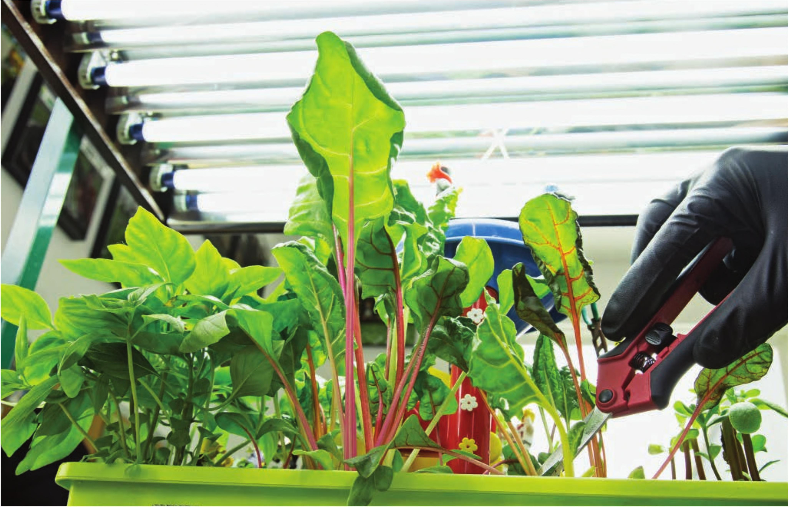

Above: The crops planted in this garden include rainbow swiss chard, nasturtium, dill, chervil, purslane, and Thai basil. These crops can be harvested multiple times. A 2' four-tube T5 grow light fits perfectly over this garden. Left: Fairy gardens don't need to house only fairies! This garden has dump trucks, dinosaurs, and Legos. 98 DIY HYDROPONIC GARDENS
